Overview
In this assignment, I was able to implement a real-time three-dimensional simulation of a
cloth by using a grid of point masses and springs. By strategically organizing these masses
and springs and providing proper constraints, I could not only render a cloth but also
through the use of Hooke’s Law and Verlet Integration, I was now able to begin to apply
forces such as gravity to the cloth and simulate realistic movement. Throughout the
progression of the project, I go from only being able to simulate the cloth falling or
being pinned to now being able to have my cloth handle collisions with objects such as spheres
and planes to even handling self-collision all by calculating correction vectors and
correcting point mass positions. And now that the cloth behaves almost lifelike, I finally
implemented a few shader programs that allowed me to alter the the geometric and visual
properties of our previously implemented objects. Some of the shaders I was able to implement
were diffuse, Blinn-Phong, texture mapping, bump and displacement mapping, and mirror shaders.
To me, this project was the most fun to implement because we were now beginning to learn
about realistically simulating moving objects and figures all in real time with little to
no wait. I now began to fundamentally understand and appreciate some of the basics of the
work and physics that happens behind the scenes to get things such as animated shorts to
animate so realistically.
Part 1: Masses and Springs
In the first part of the project, I implemented an evenly spaced grid of masses all connected by
certain patterns of springs. This interconnected grid of masses will be our basis from which we
will be able to model our cloth and eventually help us simulate cloth animations with realistic
physical behaviors. In order to build our grid of masses and springs, we need to evenly space our
masses across width and height lengths of the cloth based on the provided num_width_points and
num_height_points values (which means that each mass will have a distance of width/num_width_points
and height/num_height_points between between them and other masses). Depending on the cloth’s
orientation, we can either get the case where the cloth is horizontal and we keep the y-values
consistent with an equal value of 1 or the cloth is vertical and we keep the z-values pretty
consistent (we use a small random offset between -1/1000 and 1/1000). We also take note in this
part whether a mass is inside the pinned vector, and if so we set the mass’s pinned boolean to
true. After storing all of the point masses in the point_masses vector in row-major x-axis
order, we now connect these masses using three types of spring constraints, in particular:
Structural Constraints (which connects a spring between a point mass and the point mass to
its left and also the point mass above it), Shearing Constraints (which connects a spring between
a point mass and the point mass to its diagonal upper left and its diagonal upper right), and
Bending Constraints (which connects a spring between a point mass and the point mass two away
to its left and another one two above it). I also made sure to take edge cases into account and
only assign these spring constraints if the conditions were met and point masses were available.
Below are some images of scene/pinned2.json which shows us the cloth wireframe consisting of our
point masses and springs. Each wireframe uses a distinct combination of constraints:
|
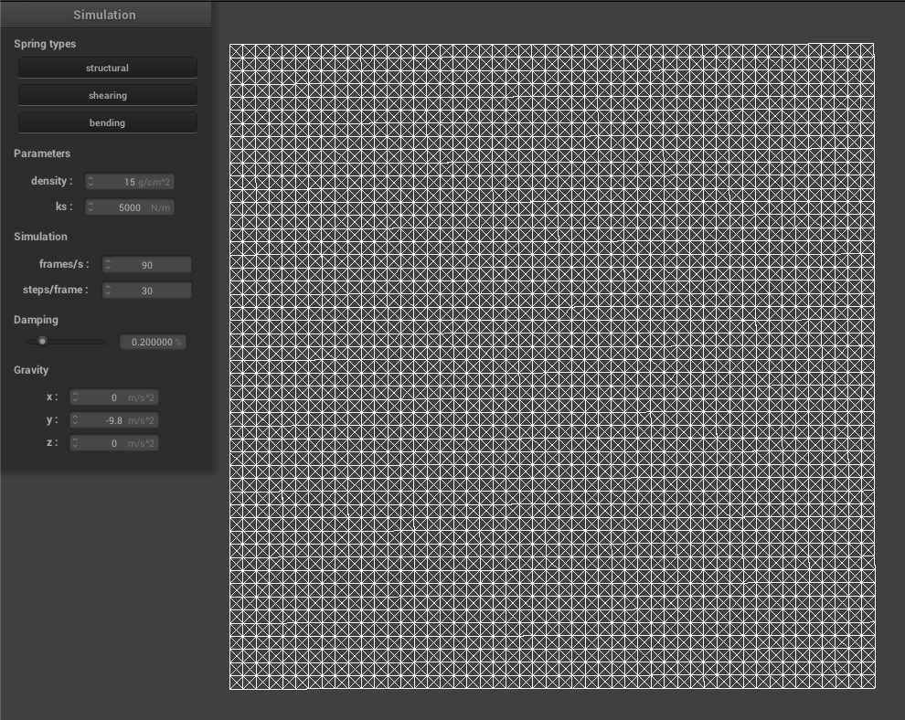
Wireframe With All Constraints
|
|
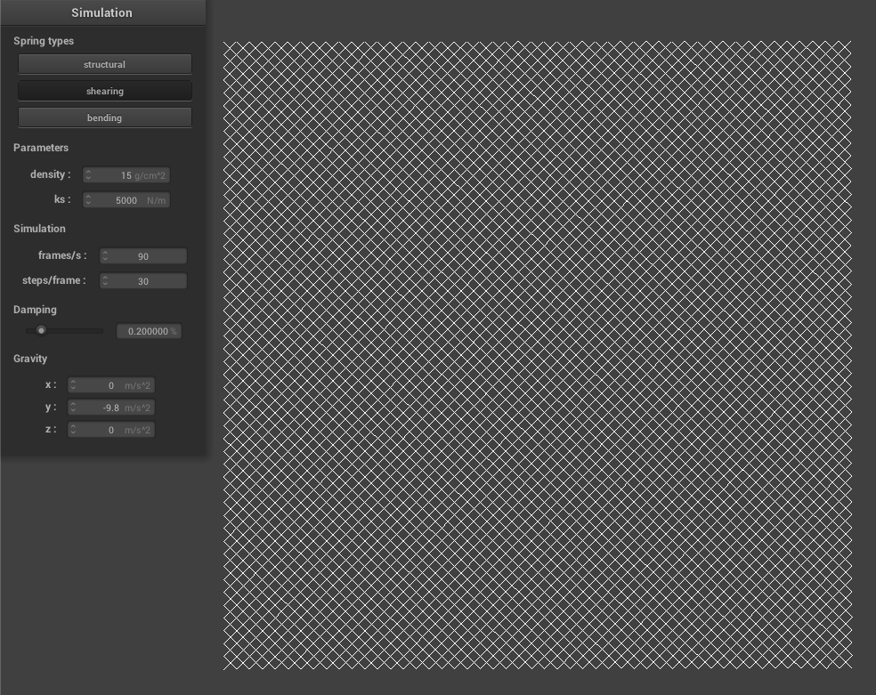
Wireframe With Only Shearing Constraints
|
|
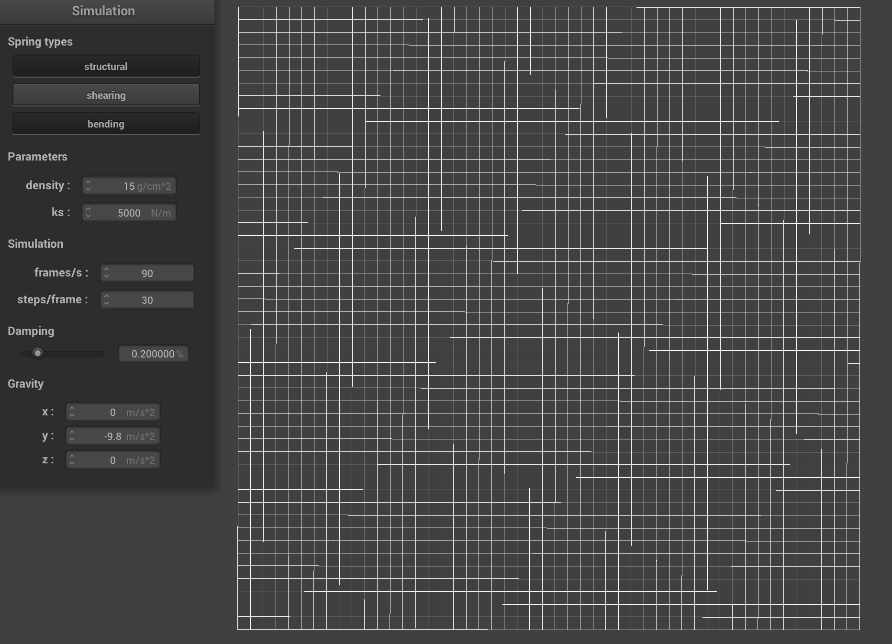
Wireframe Without Any Shearing Constraints
|
Part 2: Simulation via Numerical Integration
In the previous part of the project, I implemented an interconnected cloth-shaped grid of
point masses and springs. In this part of the project, we want to extend our grid to be able
to simulate motion. In order to accomplish this, we must first calculate the total amount of
force acting on each point mass. All of these forces each act upon each individual point mass
and influences the physical behaviors of the point masses. In this case there are two types
of forces we must take into consideration when performing our calculations: external forces
(like gravity) which affect the cloth’s physical behaviors and spring correction forces which
help keep the cloth together and connected by applying the spring constraints previously
implemented. We calculate the total external force by using Newton’s Second Law and
then apply the spring correction forces which will then allow us to compute the total force
acting on each point mass connected by a spring using Hooke’s Law. We apply the magnitude of
this resulting force to one of the connected point masses on the spring and apply an equal
opposite force on the other connected point mass. We now have the forces acting upon each
point mass, next we need to update each point mass’s positions and in order to help us do
this, we use Verlet Integration. To prevent our cloth from being misshapen, we constrain
the newly computed point mass positions such that the spring length can never be extended
to more than ten percent than its rest length. Below are images of the cloth (one with two
pinned points and the other with four pinned points) after completing their falling
animation using the default parameters:
|
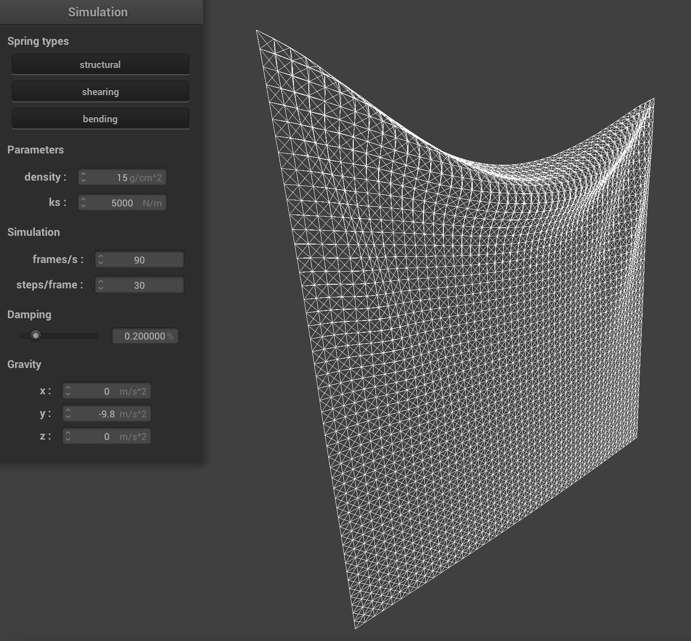
Wireframe With 2 Pinned Points
|
|
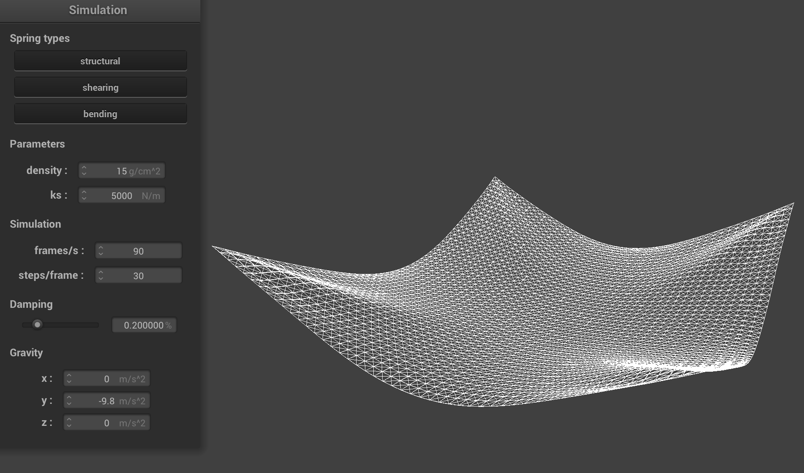
Wireframe With 4 Pinned Points
|
In the screenshots below, we can observe the differences between using a very high and very low
spring constant ks. When we have a high ks value such as 50000, the cloth’s springs are
applying a lot of force so the springs tend to have more influence on the cloth over other
forces such as gravity. This is why when we look at our cloth with a high ks value, we can
see that the cloth barely has any wrinkles, does not sag, and tends to look and behave a
lot more stiff both when it falls and when its at its resting position. On the other hand when we
use a very low ks value, we can see that the cloth has a more significant amount of wrinkles
and tends to sag and droop mostly around the center so we can definitely see gravity playing
more of a role here. The cloth also feels a lot less stiff when falling and overall feels
a lot more loose and moves a lot more freely in comparison:
In the screenshots below, we can observe the differences between using a low density and
using a high density. When we use a low density such as 1, we can see that the cloth looks
and acts pretty stiffly. The cloth also does not contain many ripples and looks very smooth.
We can also see that there seems to be a very slight amount of sagging near the cloth’s
center between the two pinned points. Now when we use a larger density value such as 150,
we can see that as the cloth falls, the cloth begins to ripple and sag. At its resting
position, the cloth droops very much at the center between the two pinned points and gravity
looks to be applying more force on the point masses as the cloth droops and wrinkles:
|
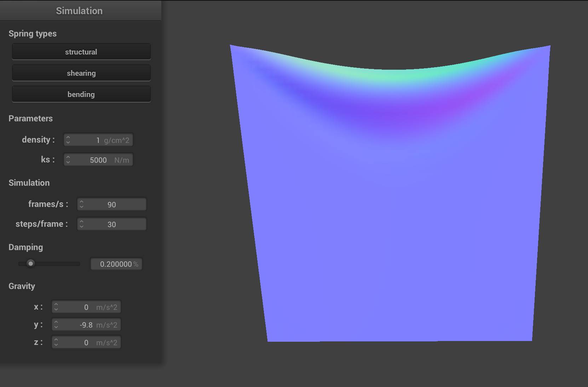
density=1
|
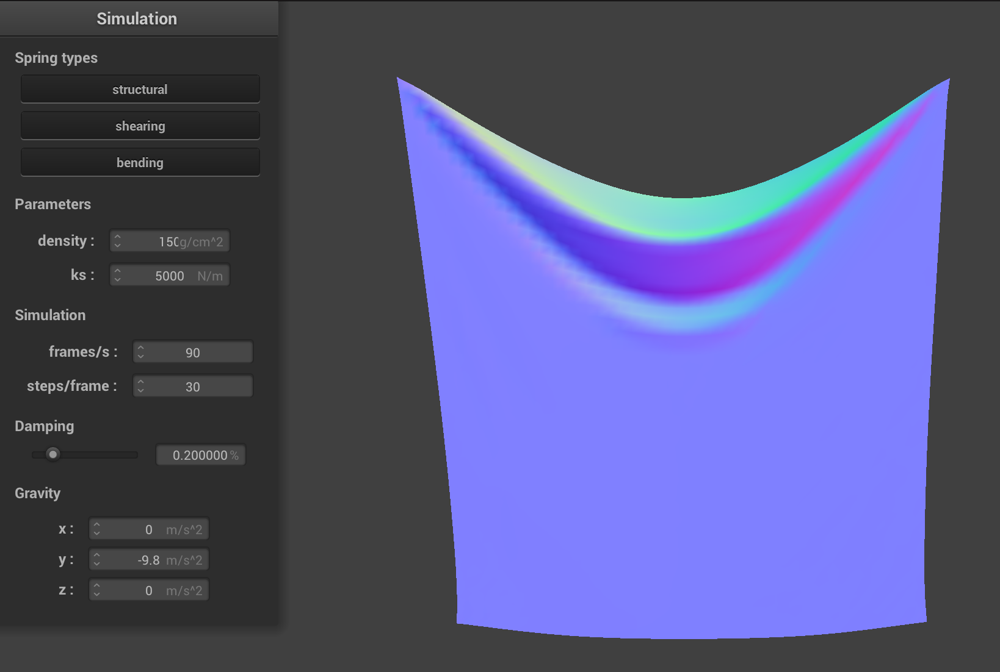
density=150
|
In the screenshots below, we can observe how our cloth reacts to having a low damping value.
Damping values seem to have the most effect on how fast our cloth's falling simulation is and how
exaggerated or stiff it acts. If we observe the sequence of images below, we can see that
the cloth begins falling and right from the beginning the cloth seems to already have a rippling
effect. The simulation is pretty fast and the cloth swings back and forth pretty wildly and freely. The cloth
looks as if it were made from a very thin and loose material:
|
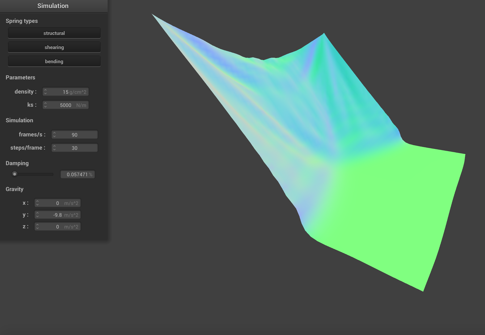
damping=0.057 (1)
|
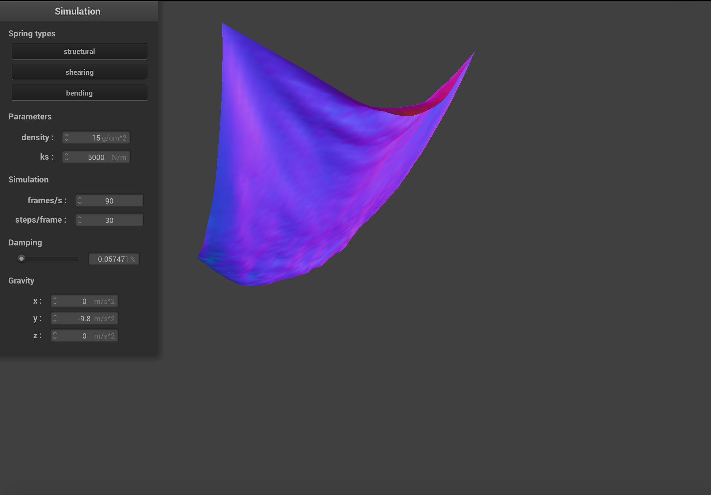
damping=0.057 (2)
|
|
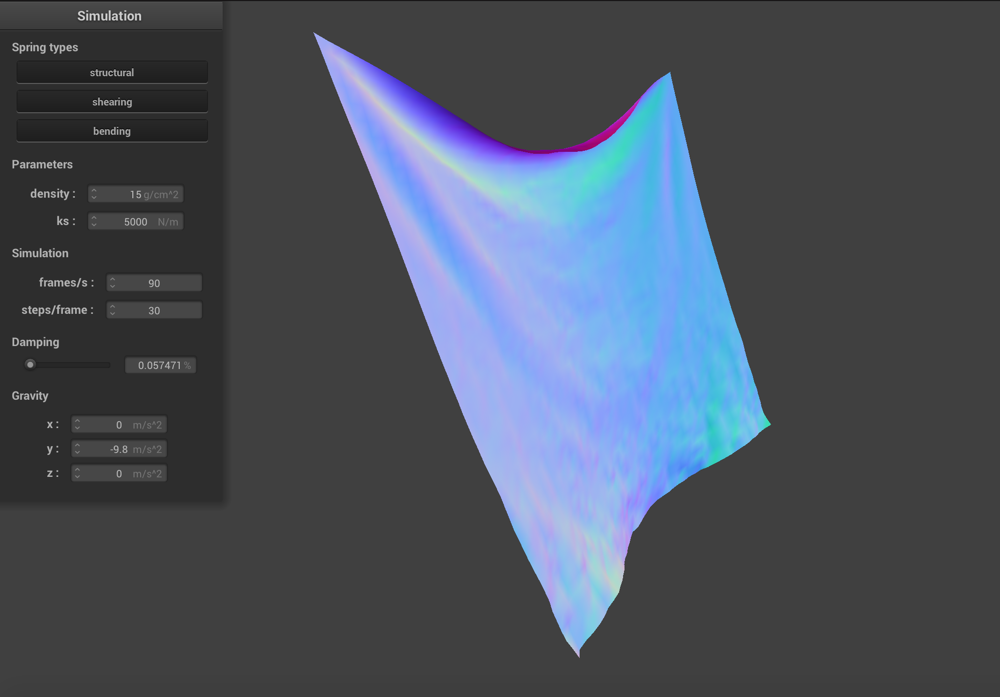
damping=0.057 (3)
|
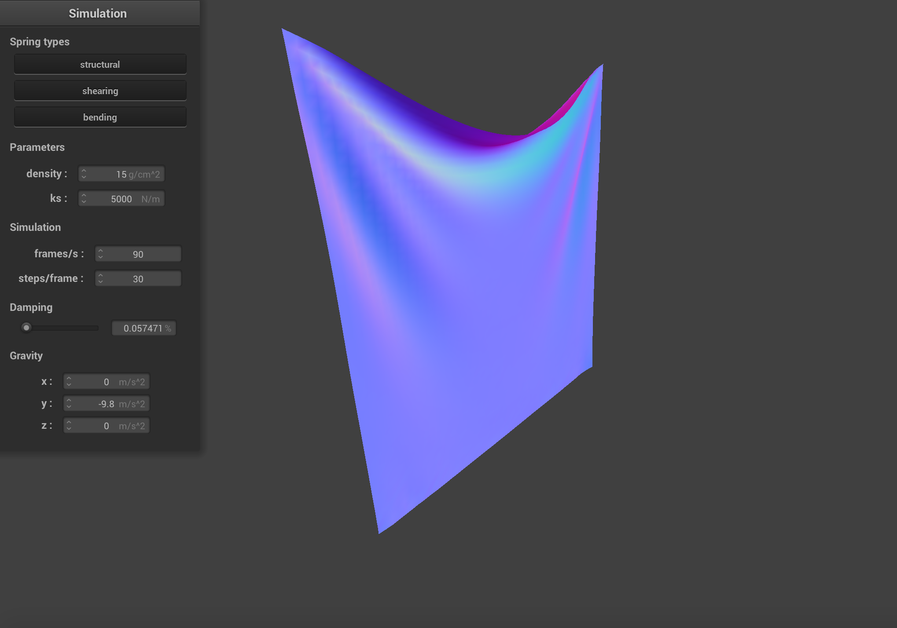
damping=0.057 (4)
|
The following screenshots below depict the sequence of the falling cloth but now with a
high damping value of around 0.954. We can see that right from the beginning of the falling
animation, there barely seems to be any form of any ripples or saggy material in the cloth.
The cloth looks as if it were made from a very thick and stiff material because it
falls very slowly in comparison to when the damping value was low. Contrary to the case with
a smaller damping value, when the cloth has a high damping value, it does not seem to swing back
and forth. Once it falls to the resting position, it stays there and does not move. However,
the cloth does seem to look quite similar to the resting position when we used a low damping value,
which shows that damping value tends to influence more the speed at which the cloth falls and
amount of movement it has:
|
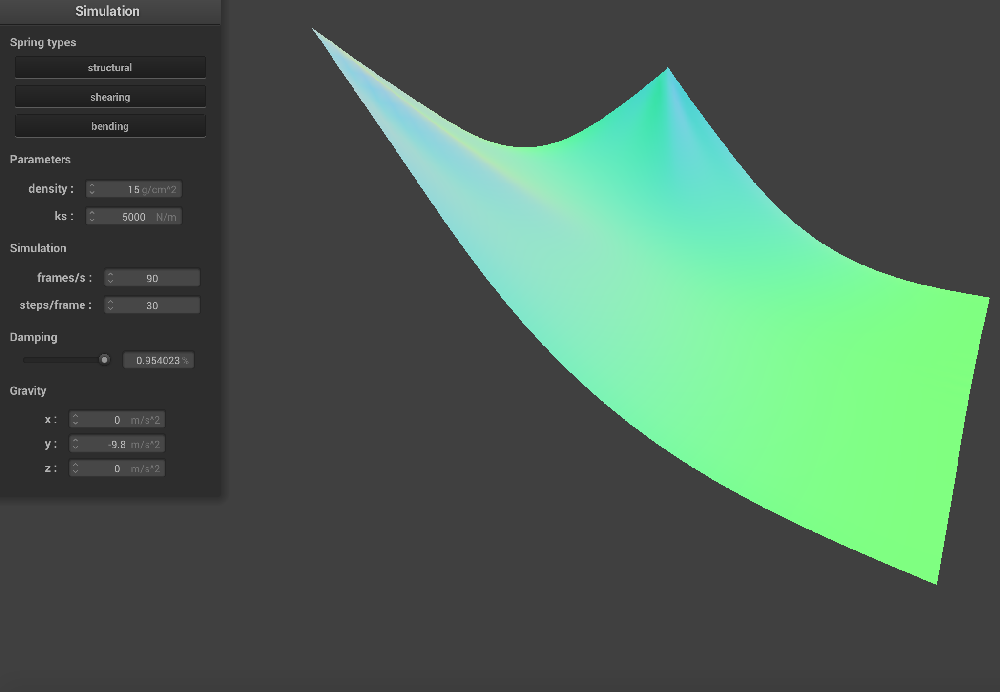
damping=0.954 (1)
|
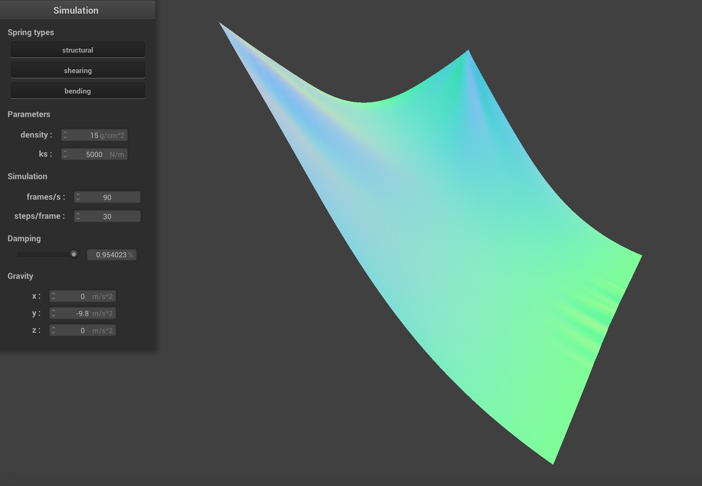
damping=0.954 (2)
|
|
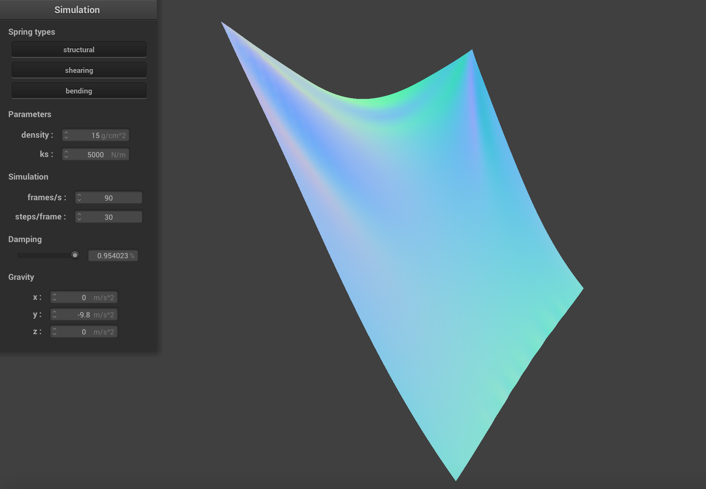
damping=0.954 (3)
|
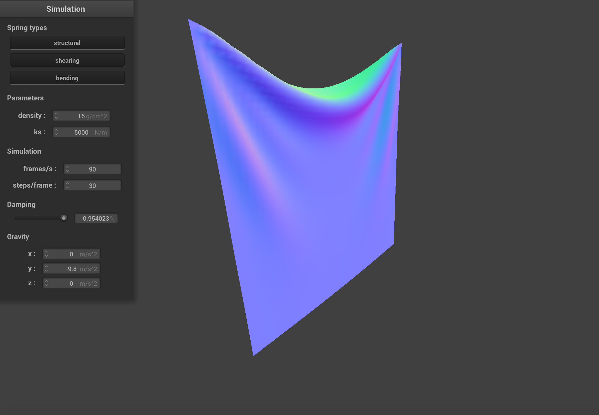
damping=0.954 (4)
|
The two screenshots below show our pinned4 cloth in its final resting state using default parameters
and two different viewing angles:
|
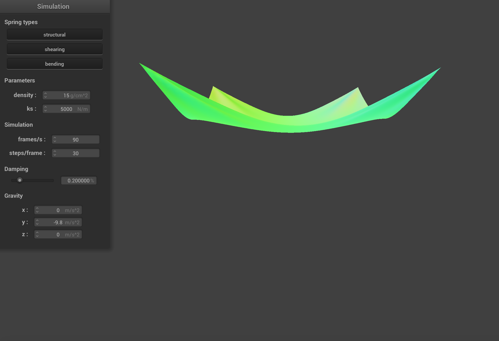
pinned4 Final Resting State Angle 1
|
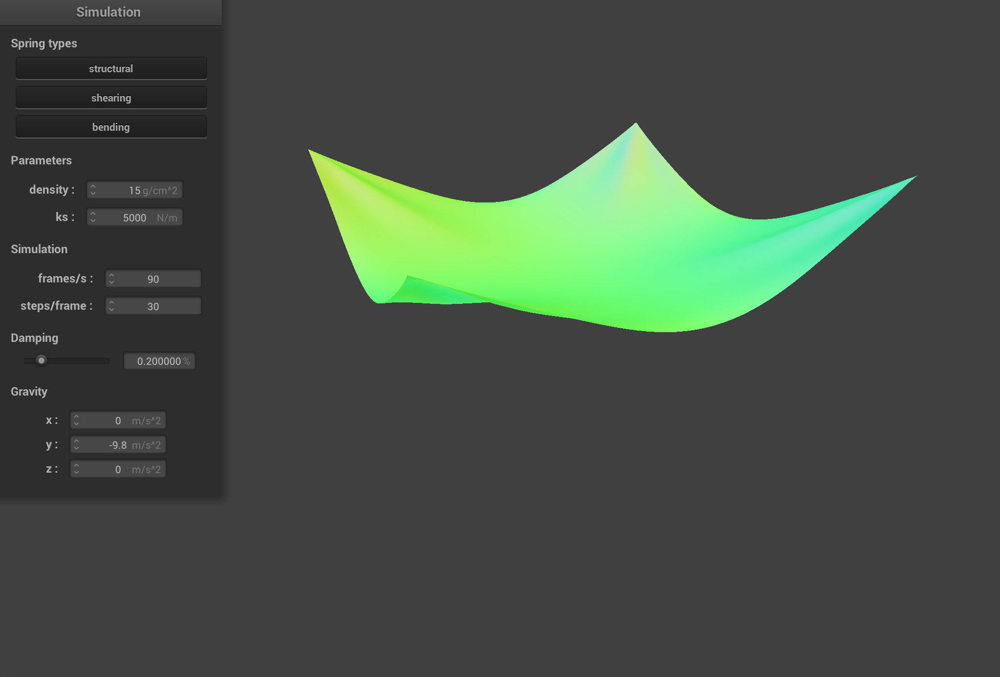
pinned4 Final Resting State Angle 2
|
Part 3: Handling Collisions With Other Objects
Now that we have been able to successfully simulate motion for our cloth, we must now be able
to fully implement handling collisions with objects, more specifically for this part of the
project we must concentrate on handling collisions with spheres and with planes. When attempting
to handle collisions with spheres we must first determine whether or not the point mass’s
position intersects or is inside the sphere. If so, then we theoretically “bump up” the point
so that rather than being inside the sphere, it is now above the surface of the sphere. In
order to do this, we calculate the position where the point mass should have intersected the
sphere, use this value to help us compute the correction vector from the last position, adjust
the last position by this correction vector and scale down by the friction. The process for
handling collisions with planes is pretty similar to that of spheres. In the case of planes
however, we check whether a point mass’s position has crossed over from one side of the plane
to the other in between time steps. If this happens, then we “bump up” the point to the original
side of the surface. The process for doing so is pretty similar to that of a sphere but the
difference being that we use a small displacement SURFACE_OFFSET. So similarly to that of the
sphere, we compute the position where the point mass should have intersected the plane,
calculate the correction vector, and use the correction vector to adjust the point mass’s
last position and scale down by the friction and adjust our position by our small displacement
SURFACE_OFFSET.
Below are some screenshots of the cloth in its final resting state on the sphere using increasing
ks values. Let us observe the differences between the images. When we use the lowest of the three
ks values (ks = 500), we can see that the cloth seems to look as if it were made from a very thin material
and it falls more loosely and freely. The cloth has many folds and seems to drape down the sphere
more freely. Now when we increase our ks value to a higher value such as having ks = 5000, we can see
that the cloth does not seem to drape or sag as much as when the cloth had a ks value of 500. The
cloth still has some folds and creases but it looks as if it were made from a slightly thicker material
making the cloth look a little bit stiffer. Now when we use the highest of the three ks values
(ks=50000), we can see a huge difference in the cloth's physical behaviours. The cloth
looks as if it were made up of a very thick material thus making the cloth appear to be very stiff.
Out of all of the images, this cloth seems to be the one with the least amount of creases and folds
but the folds here look very defined and are very large. In comparison to the other images, this
cloth has the least amount of sagging or draping properties:
Below are two screenshots of the cloth lying peacefully at rest on the plane. Each image
uses a different shader, one uses the diffuse shader and the other uses the normal shader:
Part 4: Handling Self-Collisions
Up to this point in the project, we have been able to successfully have our cloth handle
collisions with objects such as spheres and planes. If we were to have our cloth fall on
itself, the cloth would basically just clip right through itself unnaturally as opposed to
the realistic physical properties of real cloths that would fold upon themselves when falling.
In order to fix this issue, in this part of the project we implement handling self-collisions.
In this implementation I use spatial hashing. In spatial hashing, we first begin by taking a
point mass’s position and mapping it to its closest 3D box within a 3D space of many boxes.
Using these coordinates, we calculate a unique number that represents these coordinates (we
are essentially hashing the coordinates) and use this calculated key later on for our hash
map. We then fill in our spatial map (which acts as a hash table) with all of the point masses.
We then check each point mass and compare its distance with other point masses in its 3D box
inside the hash table. If the distance between each pair of point masses is within 2*thickness
distance apart, we calculate and apply a correction vector to the original point mass in order
to prevent a collision so that now the point masses always maintain a distance of 2*thickness
apart from one another.
Below are a sequence of four ordered screenshots using default parameters that show the process of how the cloth falls and folds itself
starting from an early point in the self collision process and ending with the cloth in a more
restful state:
|
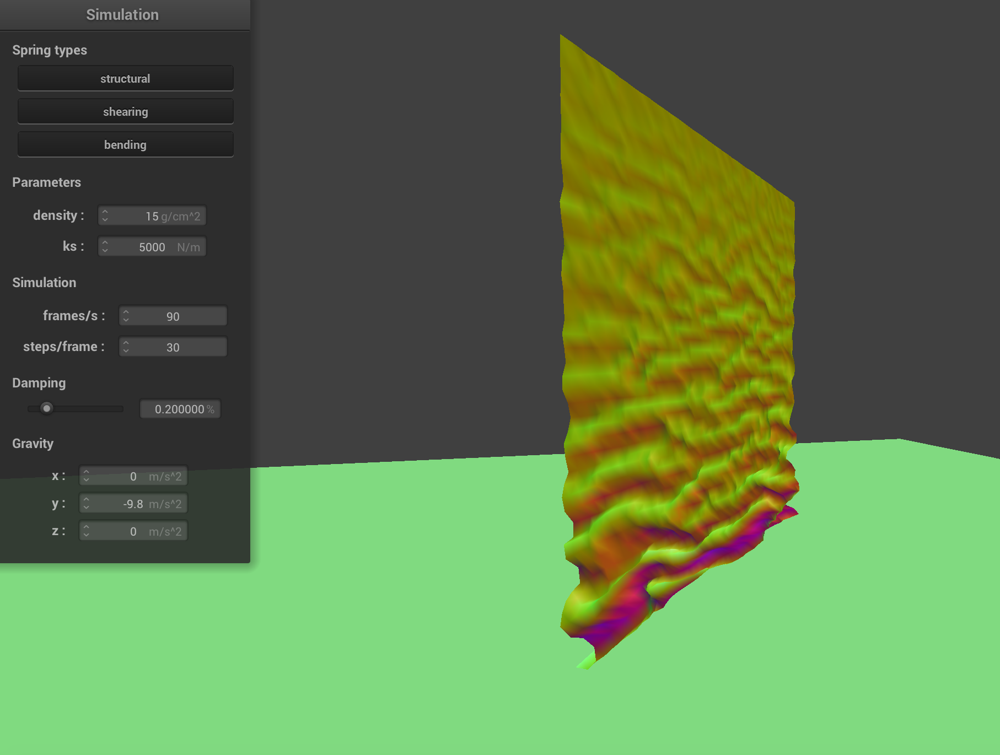
Self-Collision 1
|
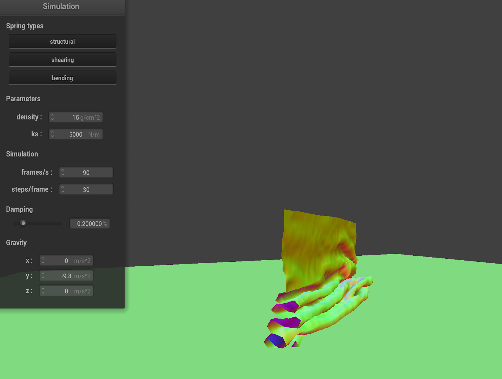
Self-Collision 2
|
|
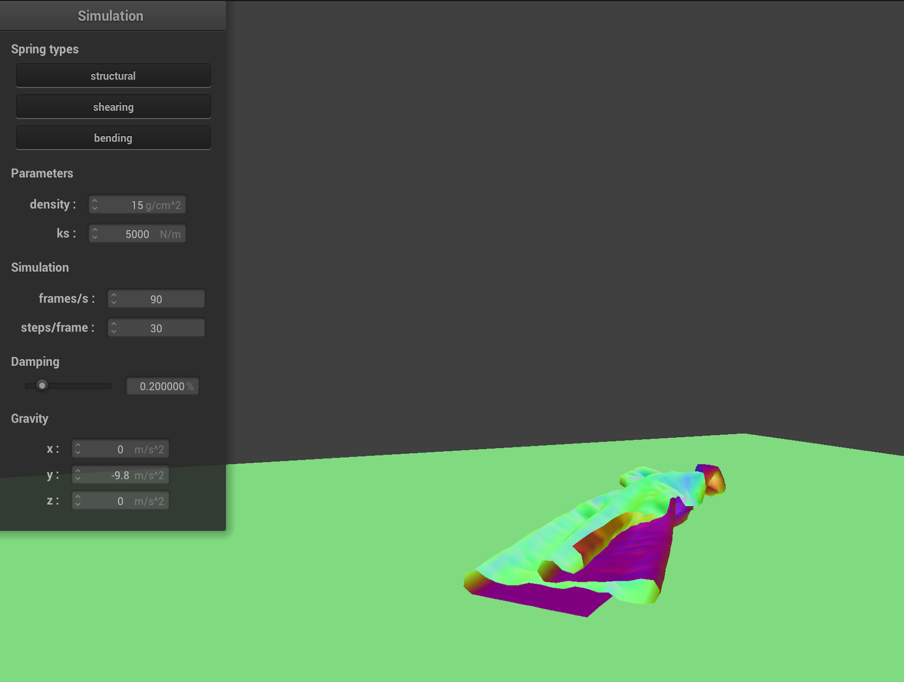
Self-Collision 3
|
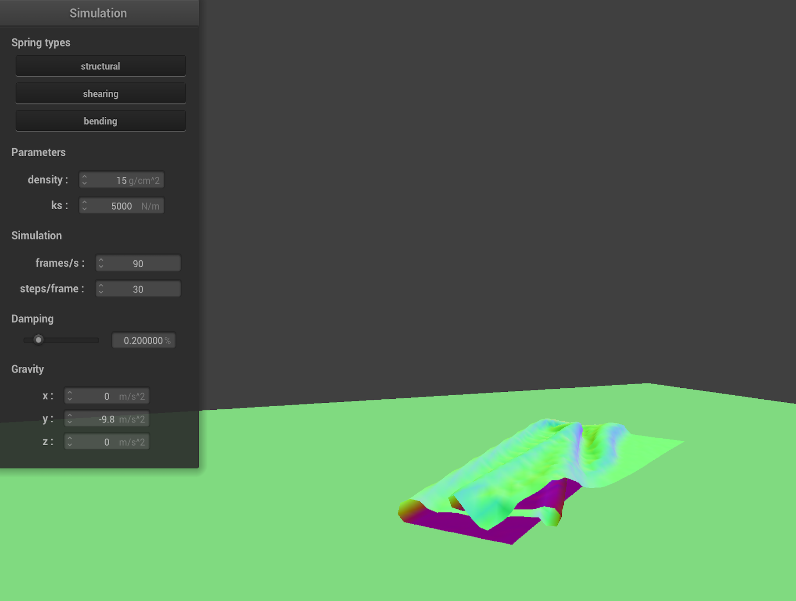
Self-Collision 4
|
Now that the cloth is able to handle self-collisions, let us observe the cloth's differences in behavior
when we vary the ks and density values. First let us look at when we let our cloth fall with a low
ks value (in this case I use a ks value of 1000). Once the cloth begins to fall, it starts to fold and
crease very easily. The cloth looks as if it were made of a very thin material and if I had to compare
the cloth to an everyday object, I would compare it to a very thin tissue. Since the ks value is small, the
spring forces seem to be less influential on the cloth when compared to the force of gravity:
|
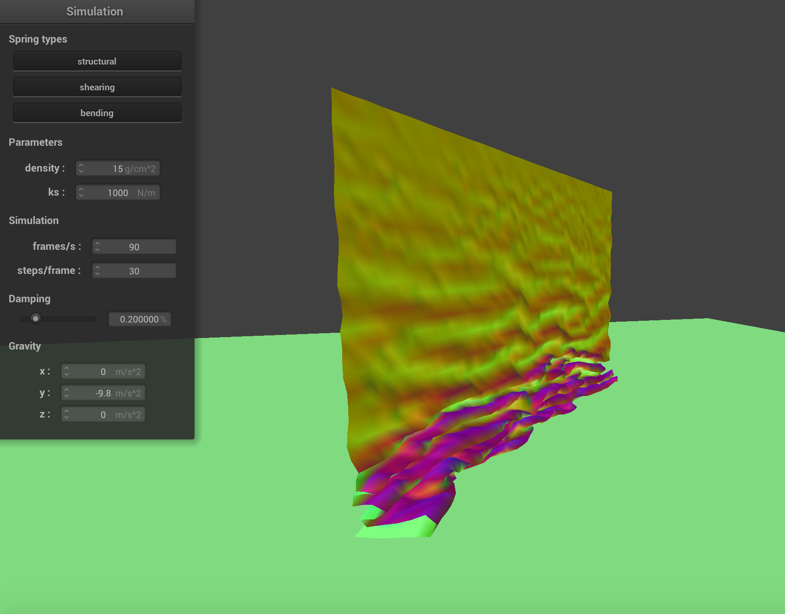
ks=1000 (1)
|
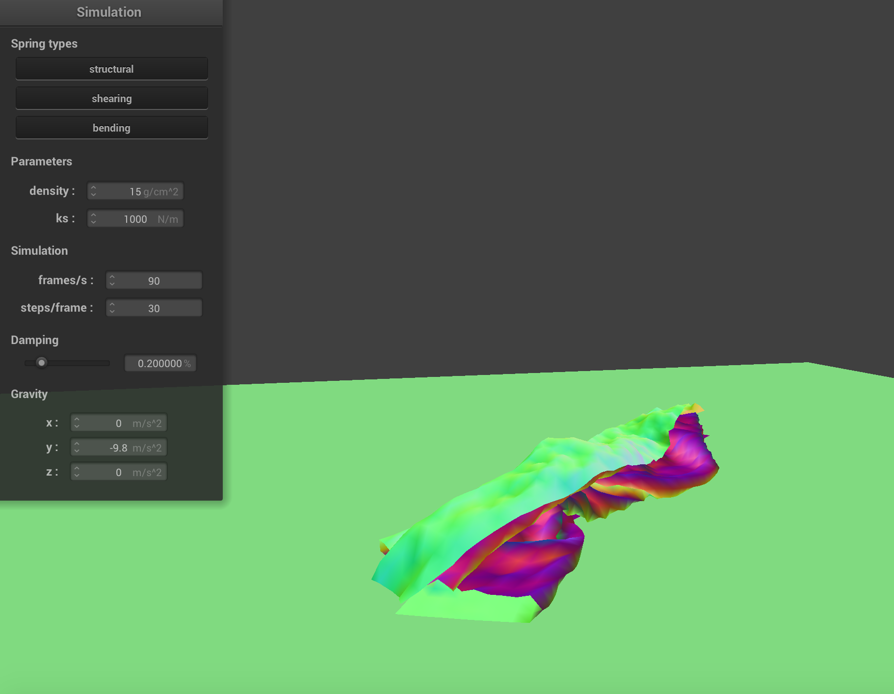
ks=1000 (2)
|
Now when we increase the ks value of our cloth to ks = 100000, we can see a huge difference
in the cloth's behaviors. Now our cloth seems to look and act a lot more stiff and thick. If I were to
compare the cloth to an everyday object, I would compare it to construction paper. The cloth falls very slowly
and creates large folds as it falls. Contrary to the cloth when it had a ks value of 1000, once the cloth
completes the falling animation, it unfolds a lot easier because it has a lot less folds in comparison
and its folds are more big:
|
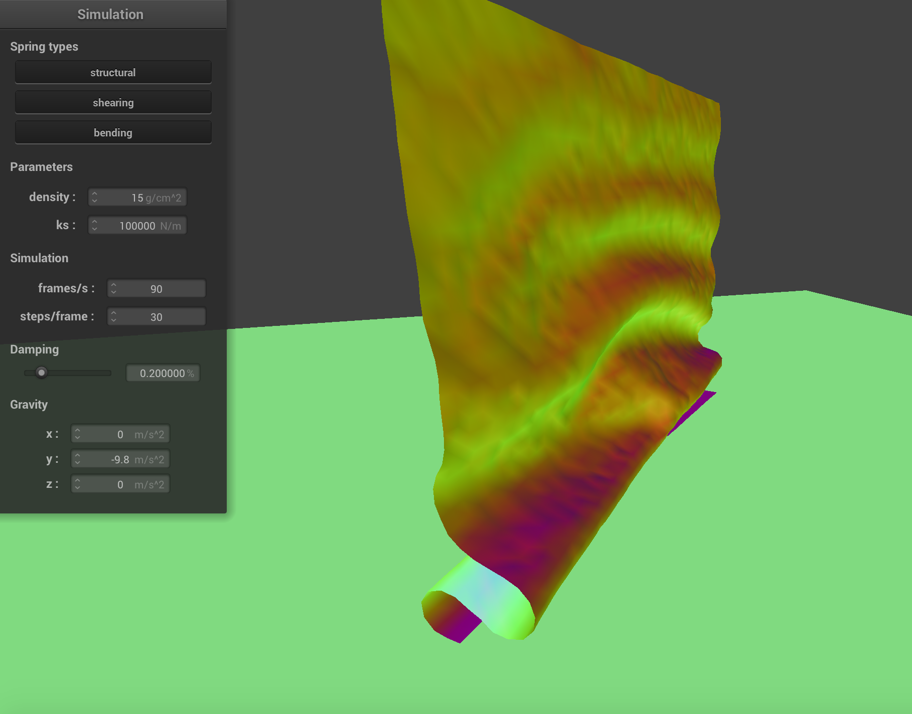
ks=100000 (1)
|
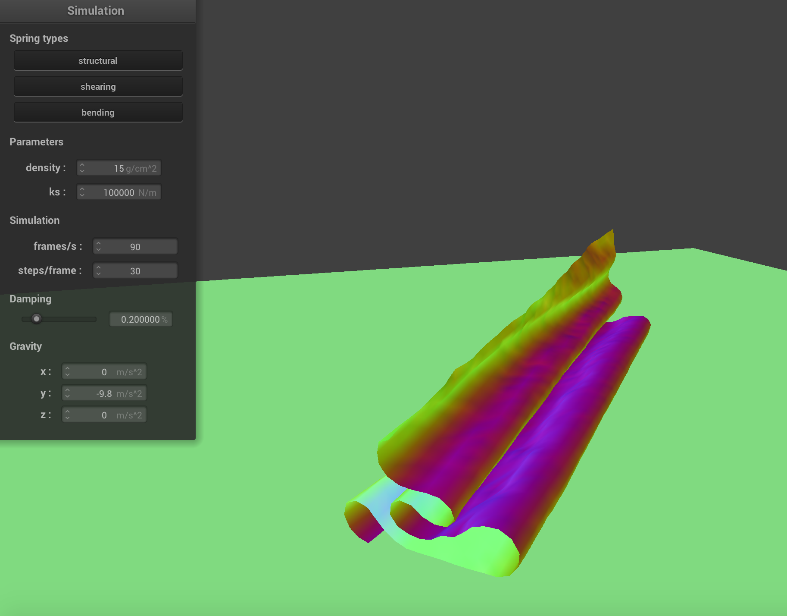
ks=100000 (2)
|
Now lets vary the cloth's density values and observe the differences of the cloth's behaviors. When we use
a small value for density (in the below case I use a density value of 1), the cloth can be seen to have very large
folds, falls pretty slowly, and looks like it is made of a thick and stiff material. When the cloth has a low density value, it seems to physically act
very similarly to when our cloth used a very large ks value:
|
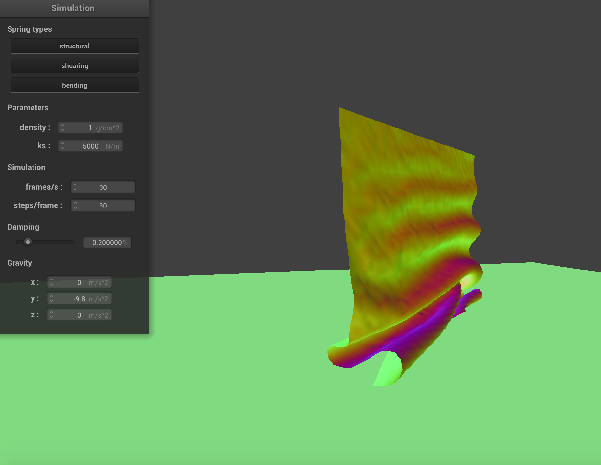
density = 1 (1)
|
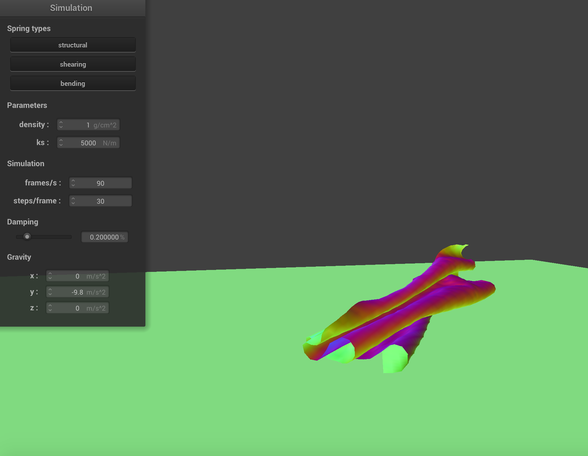
density = 1 (2)
|
Now when we use a higher density value such as when density = 50, the cloth begins to exhibit different
behaviors. The cloth now falls a little more quickly and when it does fall, it has a significant more amount
folds and creases much more easily. The cloth looks as if it were made of a very thin and flimsy material.
When the cloth has a high density value, it seems to physically act very similarly to when the cloth uses a
small ks value:
|
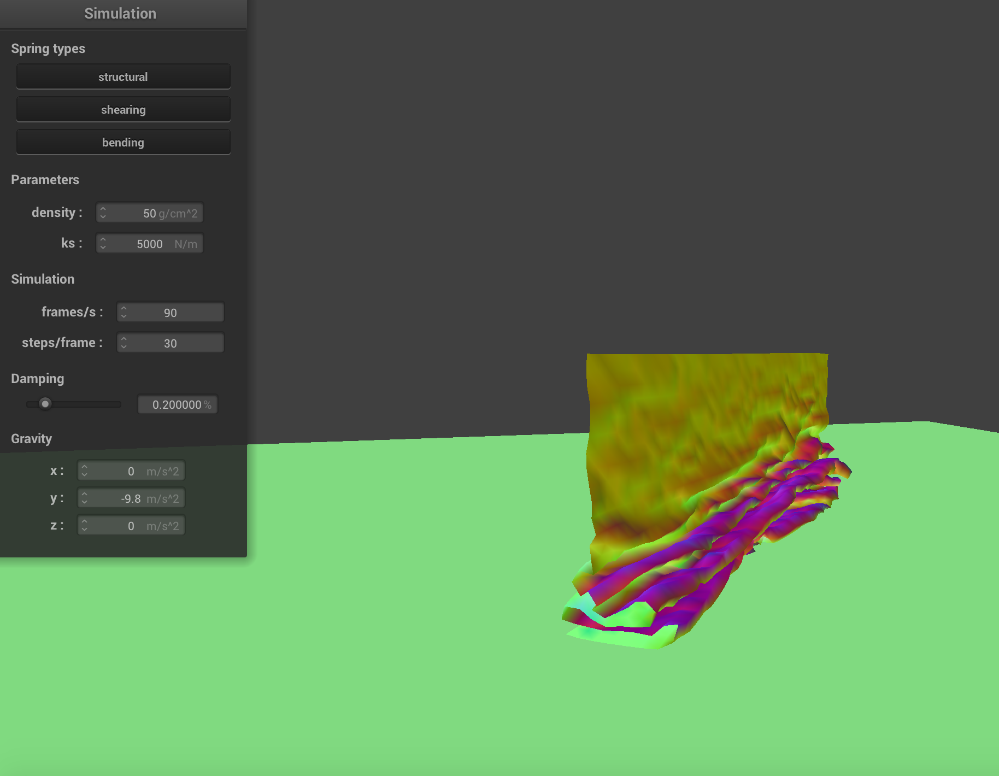
density=50 (1)
|
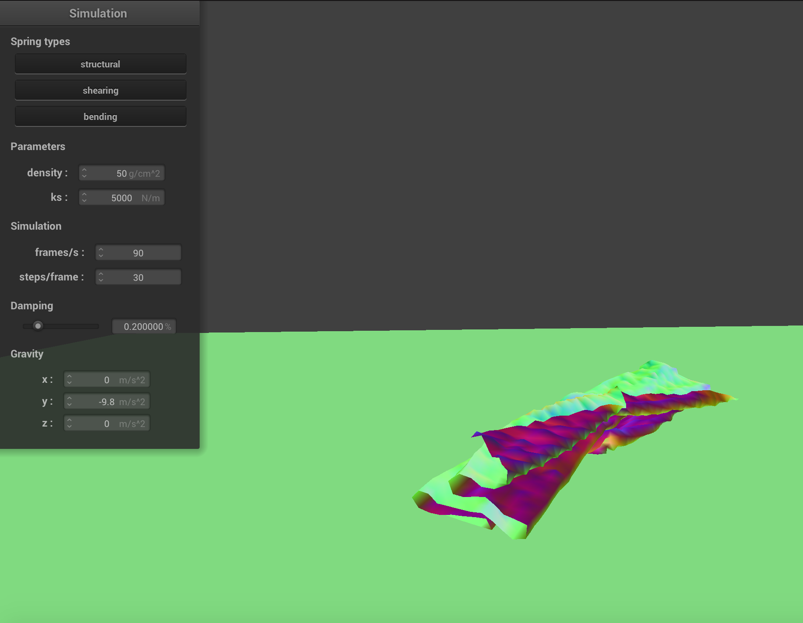
density=50 (2)
|
Part 5: Shaders
In this part of the project, I began to familiarize myself with shaders and was able to
implement a few GLSL shader programs that produced different visual results in objects
created previously throughout the project. In previous projects, all of our raytracing computation
was done on CPU which resulted in single frames taking anywhere from a few minutes to
a few hours to fully render depending on the scene and number of rays and samples needed to be taken
into consideration. What a shader allows us to do is rather than relying on the CPU, a
shader takes advantage of the parallel running power of the GPU to be able to render
these objects in real-time and allow fast user interaction. By using the GPU, we can
drastically speed up the process of rendering objects when mathematically applying our
given inputs to adjust the geometric properties and color of our objects. In this project,
we use two OpenGL shader types: vertex shaders and fragment shaders. What vertex shaders
allow us to do is that we can reshape and adjust attributes of our objects such as their
positions and normal vectors through performing geometric transforms of vertices found in
our input of our objects.The output of these types of shaders are positions. Fragment
shaders receive as input these adjusted geometric values from the vertex shader and
mathematically output a color for the given fragment. Together, vertex and fragment
shaders work together to help render objects with various shading techniques, each with
their own different geometric and visual properties and proper color designation for
efficient, life-like image rendering.
The Blinn-Phong shading model combines various types of lighting to be able to create a more
realistic lighting effect on our objects. Blinn-Phong not only takes into consideration
diffuse lighting but also adds in ambient lighting and specular lighting. Ambient lighting
refers to the amount of illumination that does not come directly from a light source whereas
the specular lighting refers to the reflected light which allows us to have a more “glossy”
visual effect to our objects. The total lighting used in the Blinn-Phong shading model
can be calculated through the use of the following equation:
|
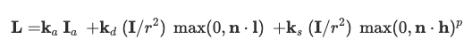
Blinn-Phong Shading Equation
|
Diffuse, ambient, and specular lighting together allow us to
achieve lifelike and realistic lighting shading through the Blinn-Phong shading model.
Below are some screenshots of each of the lighting components that help hake up the
Blinn-Phong shading model:
|
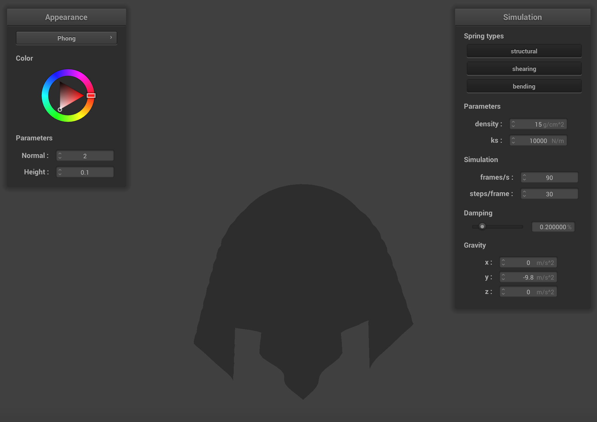
Blinn-Phong Outputting Only Ambient Light
|
|
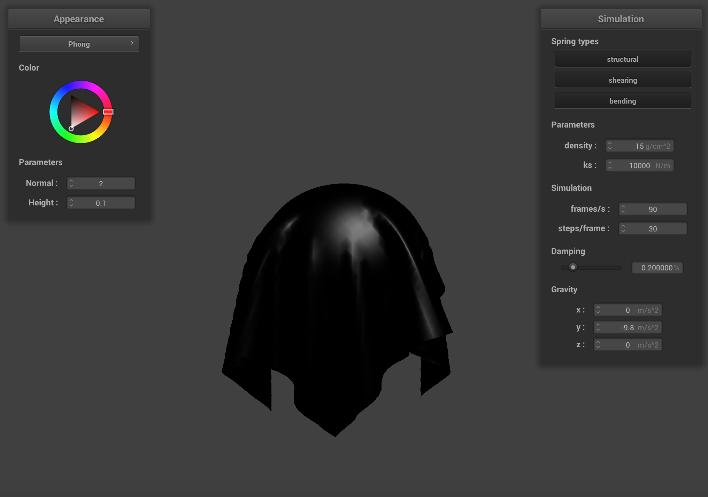
Blinn-Phong Outputting Only Specular Light
|
|
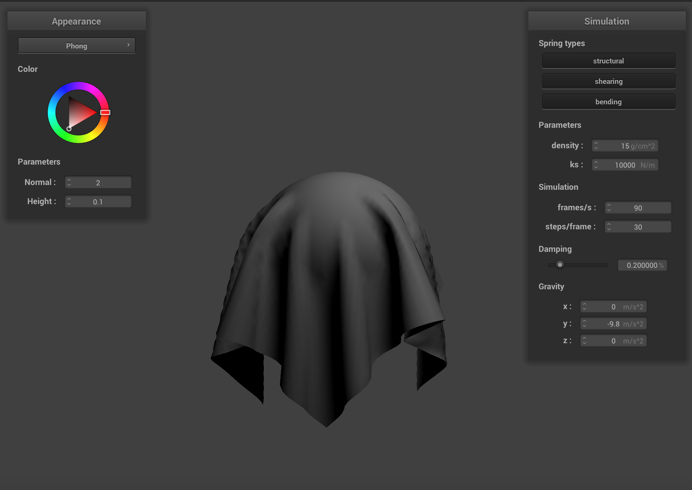
Blinn-Phong Outputting Only Diffuse Light
|
|
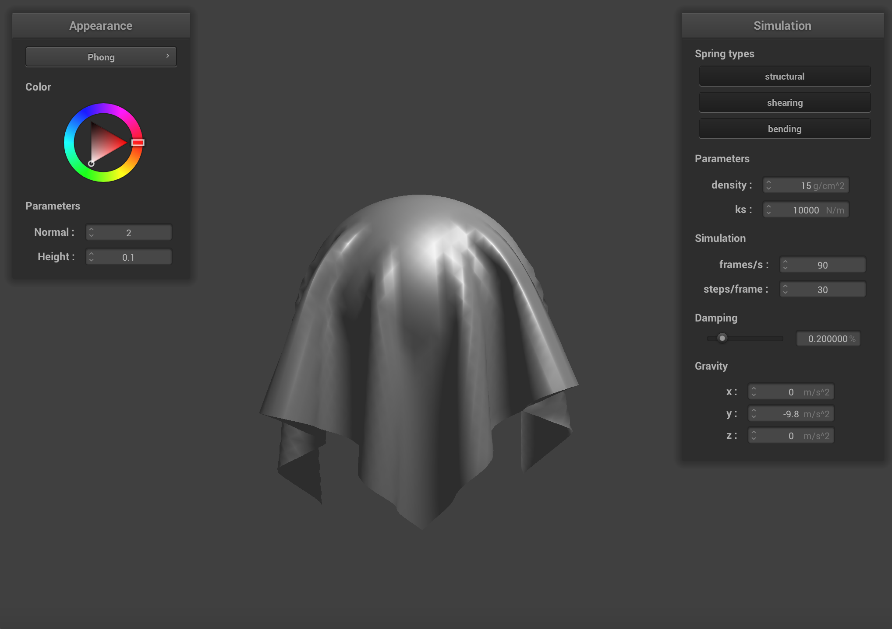
Entire Blinn-Phong Model
|
Below are two screenshots of my texture mapping shader on the sphere and on the cloth. The texture
I used was a custom texture of the floor at the bottom of a pool:
|
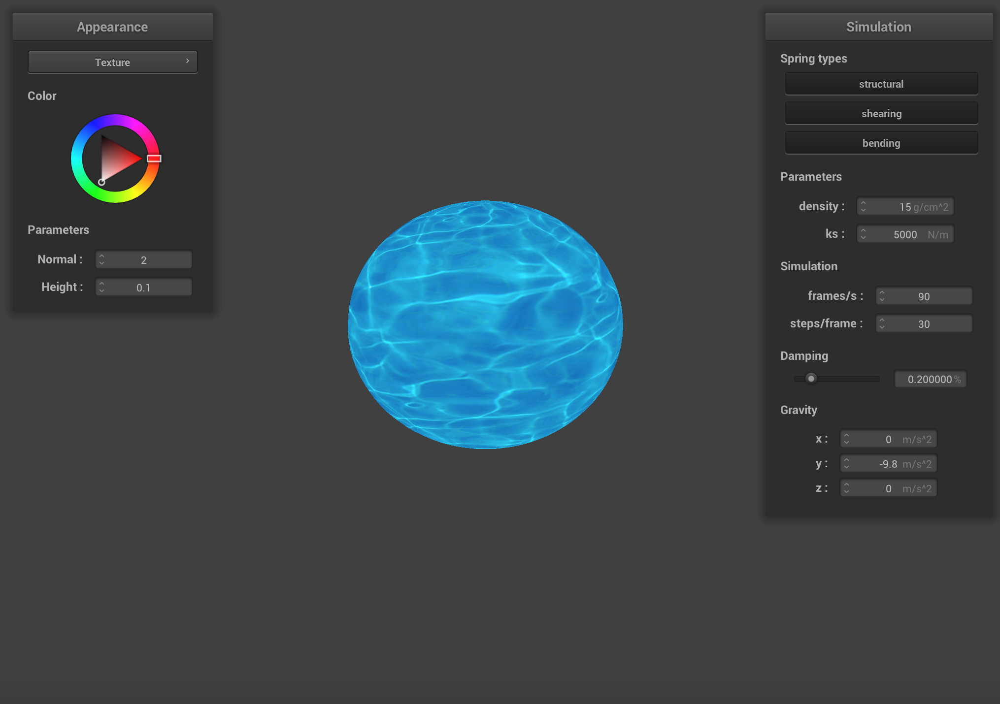
Custom Water Texture For Sphere
|
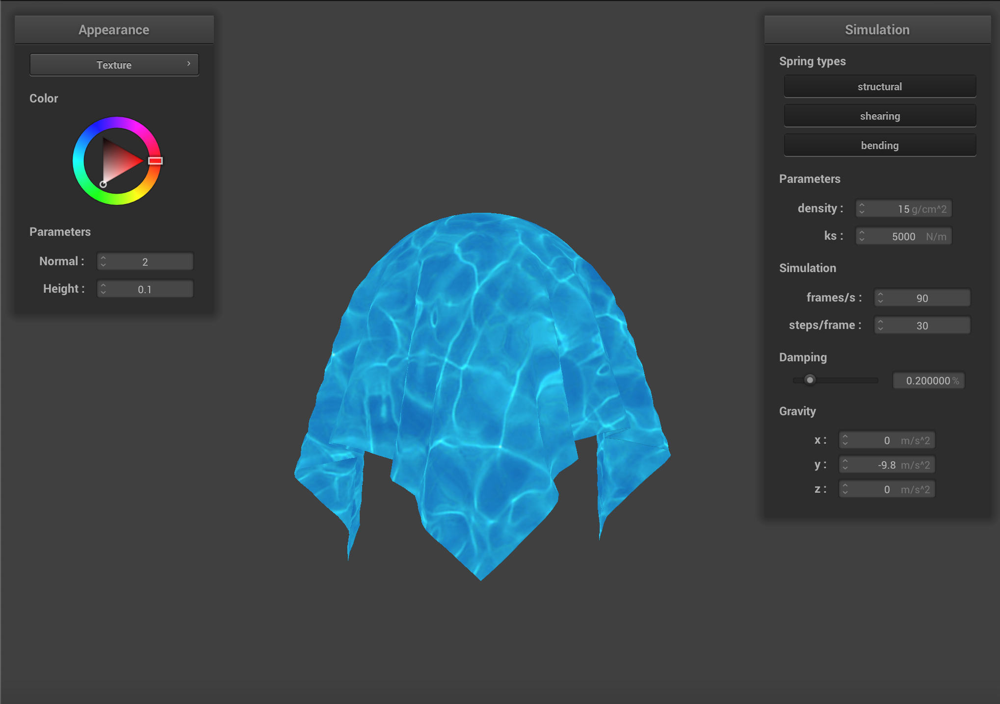
Custom Water Texture For Cloth
|
We now begin to implement Bump and Displacement Mapping. Bump mapping
allows our objects to look as though it has detailed surfaces such as
having bumps or even looking as if it were made of brick, and this is
achieved by modifying the normal vectors of the object. Our main goal
here is to calculate a displaced model space normal and the approach
in order to calculate this normal value is by performing our
calculations in object space and later transforming them back to model
space. By using the height scaling factor, normal scaling factor, and
our function that calculates the height encoded by our height map, we
can calculate the small changes in u and v and observe how the height
changes as a result as follows:
Using these values we calculate our local space normal as (-dU, -dV, 1)
and transform it back into model space by multiplying by the
tangent-bitangent-normal (TBN) matrix: n=TBN*(local space normal).
Then this will be the normal value we use to replace the previous
normal value in our Blinn-Phong shading in order to give the objects
the illusion of detail (I decided to use the Blinn-Phong shading
model in this case). The approach to displacement mapping could be
quite similar to that of bump mapping but the two types of mapping
differ in that in displacement mapping, we also modify the positions
of the vertices based on the height map on top of already modifying
the normal vectors of the object as seen previously in bump mapping.
We modify the vertex positions by using our height map function and
our height scaling factor, and calculate our displaced vertex position
by using the following provided formula:
Displacement mapping allows the objects to maintain the texture but
in addition also allows us to see how various heights of the texture
affect the object. Below are a few screenshots of bump mapping and
displacement mapping on both the sphere and the cloth. For all
screenshots I used the same texture: texture_3 which appears to be
bricks. In the screenshots we can see the differences between
displacement and bump mapping. If we look at the bump mapping on the
sphere and on the cloth, we can clearly see the brick pattern on the surface.
If we look closely at where the light hits the objects, we can even see the
detailing in the scrapes, holes, and uneven parts of the bricks. Now when we look
at our sphere and cloth in displacement mapping, we can see a pretty big change
in geometry. The surface of the objects seem to be less smooth and more jagged and
uneven. Although this is happening on the surface, we can still see our brick texture
in both our sphere and cloth. The reason for the jagged surface occurs because
of the modifications to our vertex positions when we calculated our displaced vertex position
based on the height map. We can observe these changes in the screenshots below:
|
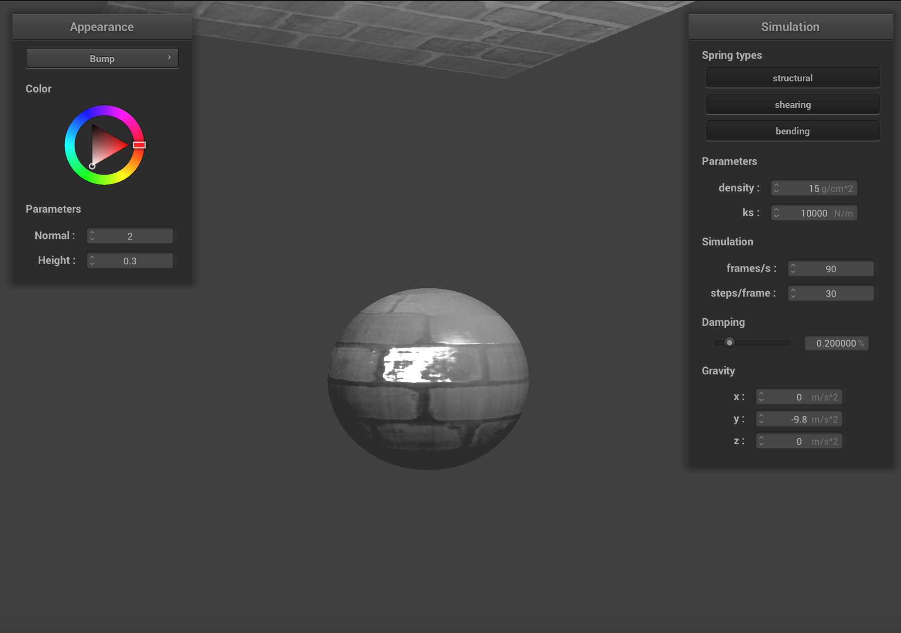
Bump Mapping on Sphere
|
Bump Mapping on Cloth
|
|
Displacement Mapping on Sphere
|
Displacement Mapping on Cloth
|
Below there are four screenshots that compare our two shaders (bump and displacement mapping)
on our sphere with different values used for the sphere mesh's coarseness. In the first two images
we use a vertical and horizontal resolution value of 16 and in the latter images we use
a vertical and horizontal resolution value of 128. When comparing the two bump mapping shaders
on the sphere, there does not seem to be any major differences between the two spheres when
changing the vertical and horizontal resolution values. The main difference is that the sphere
with a resolution value of 128 seems to be slightly lighter than that of the sphere using a
resolution value of 16. The main takeaway from this is that the resolution value, seemed to have
very little effect in bump mapping. However when we compare the two spheres using displacement mapping,
we can see a noticeable difference between their geometric features. The sphere using displacement
mapping with a resolution value of 16, seems to have have a smaller amount in variation between
changes in height and also the changes in heights throughout the sphere seem to progress a lot more
smoothly and slow. Now when we look at the sphere using displacement mapping with a resolution value
of 128, we can notice that the changes in height throughout the sphere seem to be much more frequent
and height seems to change quickly rather than gradually and slowly.
There seems to be a high amount of contrast between heights in the sphere and the surface of the
sphere has a lot sharper and more defined bumps and an overall more rough, dense, and rich surface. We can see these
differences in the screenshots below:
|
Bump Mapping on Sphere using -o 16 -a 16
|
Displacement Mapping on Sphere using -o 16 -a 16
|
|
Bump Mapping on Sphere using -o 128 -a 128
|
Displacement Mapping on Sphere using -o 128 -a 128
|
Below are a few screenshots of my mirror shader on the sphere, the cloth, and the pinned cloth:
|
Mirror Shader on Sphere
|
Mirror Shader on Cloth
|
|
Mirror Shader on Pinned Cloth
|